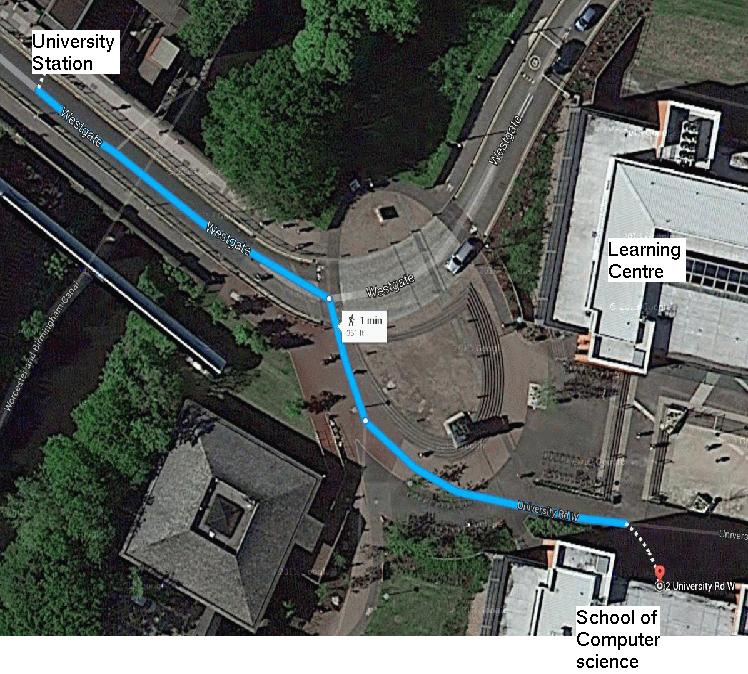
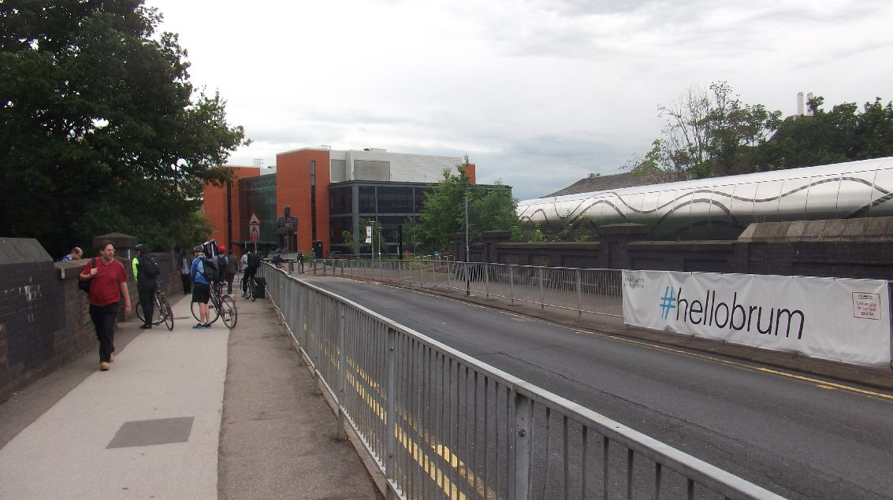
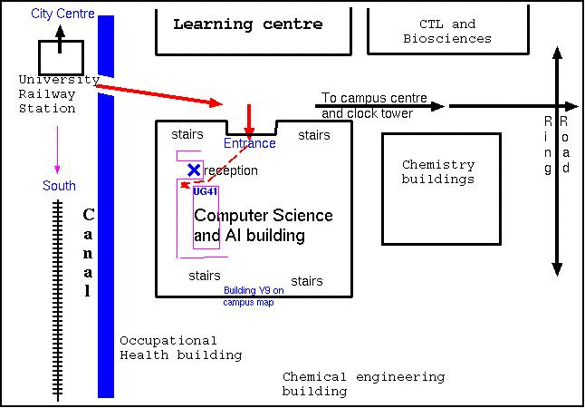

WARNING:
This file may still have errors as I don't update it often.
Please check all information, e.g. about travel by train and coach
by looking at more official travel web sites, e.g.
For further details, See the pictures below, and the school's web sites and campus map:
http://www.cs.bham.ac.uk/
https://www.cs.bham.ac.uk/about/directions
http://www.birmingham.ac.uk/Documents/university/edgbaston-campus-map.pdf
Parking on campus can be very difficult.
CONTENTS -- Where we are -- Online information on the University's web page -- Online train time tables -- ROUTES BY CAR -- From HP, Bristol, etc. via M5 -- From South East, e.g. Brighton, London -- From Reading or Oxford etc. -- From M40 -- Approaching northwards from Selly Oak on A38 -- From Coventry, along A45 -- From the north, via M6 -- Coming south on A38 from City Centre -- The South Car Park from Edgbaston Park Road -- Coming in through main entrance to the Campus in Edgbaston Park Road -- From the centre of the university -- Coming by air -- -- Arriving Birmingham International airport -- -- Arriving Gatwick Airport -- -- Arriving Heathrow Airport -- By Train (train times on the web) -- By taxi from New Street station -- -- Via Edgbaston park road -- Staff room and phone numbers
Route from Station to School of Computer Science
Come out of station, turn left, and go downhill


If you come out of University Railway Station and turn left,
you will see this view (across the railway/canal bridge)
towards the Faraday sculpture and the Computer Science building
beyond it (red bricks and glass)
____________________________________________________________________________THIS MAP SHOWS THE ROUTE LEADING INTO THE COMPUTER SCIENCE BUILDING:

There are staircases in each corner of the building. There is a reception desk
on the right as you come into the building on the ground level (labelled as
'Upper Ground' floor) in the building.
Aaron Sloman's office, is room UG41 (since January 2018), on level UG -- same
level as main entrance. Come in through main entrance. Walk past reception (on
your right) and immediately turn right into narrow corridor. At end of
corridor you'll be facing door labelled "IT Support". Turn left and left
again, and you'll see room UG41 with my name on one of the notices.
____________________________________________________________________________
Website for Maps
and Directions
NB: we are on the Edgbaston Campus, as is the conference park including
Lucas house where visitors often stay. We are in Building Y9 in the 'yellow
zone' in on
The edgbaston campus
map.
The Computer Science building is roughly on a line from the station to the clock
tower, very close to the station. There are two new symmetrically placed
buildings. ours is the one below the line as you look at the map, or on the
right as you walk from the station towards the centre of the university (past
the big statue). The building on the left is the (recently re-furbished)
Learning Centre.
http://www.nationalrail.co.uk/
(There are several other national online time tables.)
Ask for trains to "University" (station adjacent to the campus, as explained
below.) Normally you'll come via Birmingham New Street station.
____________________________________________________________________________
Come up the M5 until you get to Junction 4 and then take the A38 towards the
centre of Birmingham for a few miles. (Do NOT be tempted to go onto the M42 at
junction 4a.)
Once on the A38 you'll find it wiggles a bit then straightens out. There are
dual-carriageway bits and then eventually it gets to a junction with traffic
lights, and several big shops on left (Sainsbury's, Halfords, A pizza place, a
Pub, etc.) carry straight on across the junction. The road narrows and gets
slower.
That's where you enter Selly Oak, so see section labelled "Approaching from
Selly Oak on A38"
If you start in Central or North London, take the M1 north, and then turn west
into M6 at junction 19. Proceed to Junction 6 on M6, then see section below
headed "From the north, via M6".
If you start south or west of London, take the M25 or whatever you need to get
onto the M40 going away from London towards Oxford and Birmingham.
See section headed "From M40"
Get onto the A34 heading north, until you join the M40. Turn left onto M40 and
continue towards Birmingham.
Many miles after joining the M40 you'll get to the junction with the M42. Go
STRAIGHT on. (Do not take the left branch, as that curves round, crosses over
and then joins the M42 heading north towards Birmingham International Airport,
the NEC and M6.)
Proceed along M42 (about 5 miles) until you reach junction 2 and then turn off
and go right (North) along the A441, signposted Birmingham City Centre.
The A441 has several bends but is clearly the main road (later marked Redditch
road).
After the first roundabout you'll pass a slightly built up area labelled
"Hopwood".
At the next roundabout turn LEFT into Longbridge Lane (It should be signposted
"Longbridge").
Keep following Longbridge Lane (which wiggles a bit and crosses other roads and
goes past Longbridge Railway station, and past the Austin/Rover works) till you
meet a large dual carriage way, at a Tee junction with traffic lights.
That's the Bristol Road South, also labelled "A38".
Turn RIGHT into the A38 (i.e. roughly North East), following signs to Birmingham
City Centre.
Keep going along the A38 towards the City centre for two or three miles.
You'll reach a major junction at Selly Oak, with a large Shopping Centre, on the
left including Sainsbury's, etc.
Go straight on. See the section labelled "Approaching from Selly Oak on A38"
Selly Oak is just south of the University.
WARNING: there have been major changes to roads in the vicinity of the
University and the A38 coming north has been re-routed under a new railway
bridge close to the university, as shown here
http://maps.google.co.uk/maps?f=d&source=s_d&saddr=Bristol+Rd%2FA38&daddr=52.446463,-1.940546+to:Edgbaston+Park+Rd&hl=en&geocode=FTYUIAMd_0zi_w%3B%3BFcxRIAMdxJri_w&sll=52.443847,-1.931834&sspn=0.020587,0.055146&vpsrc=0&t=h&mra=dpe&mrsp=1&sz=15&via=1&ie=UTF8&z=15
A portion of the old A38 is shown as B38 on that map though it's actual
number is a new A number (to be inserted here later). The old route is shorter,
and can be used but may be congested.
You may start seeing the big redbrick clock tower ahead on left, in the
University grounds, from some distance away.
Eventually, whichever way you go, just past a pedestrian crossing with
traffic lights you'll come to big gates into the University on your left,
Bournbrook road on right. The entrance through the gates can only be used by
card holders, and before 11am. After that the road is used as an exit only.
If you cannot get in at the main gate on the Bristol Road, carry straight on a
couple of hundred yards (still A38 Bristol Road). Turn LEFT (opposite fire
station on your right) into Edgbaston Park Road.
This turn is just before another pedestrian crossing, where the road
splits into dual carriageway. If you go onto the dual carriageway you have
missed the turning!
See section "Car Park from Edgbaston Park Road", below.
Head towards Birmingham following signs for A38, the University of Birmingham.
Eventually you'll reach the intersection between the ring road and the A38,
where you'll see a large Maconalds on the opposite side of the junction.
Turn left into the A38 (Bristol Road, heading south).
See section "Coming south on A38 from City Centre"
Come in to the north of Birmingham via the M6, and then at junction 6 turn south
into the A38(M), sign-posted to City Centre.
Directions: come along M6, then head down A38(M) into centre of Birmingham. Keep
going straight on after it becomes A38. You'll go under about three tunnels.
Follow signs to A38 / Bristol. Eventually you'll pass a large Macdonald's on the
right at a big junction with traffic lights.
After you've passed the Macdonalds continue straight on, still on the A38
Bristol Road. You'll eventually pass Pebble Mill (a road, and BBC Centre) on
your left. Much of the road is dual carriageway.
Just before you get to the University you'll come to a pedestrian crossing,
where the dual carriage way ends, and the Gun Barrels Pub (horrible
orange/yellow coloured building labelled "It's a scream") is visible on the
right, beyond the crossing.
Turn RIGHT into Edgbaston Park Road, at the intersection just after the
pedestrian crossing, and just before the Pub. It's a nasty turn. Be careful.
If you have been invited to park on campus and have been sent a parking ticket,
continue up Edgbaston Park Road. You will very soon come to the main University
entrance on the left, with a barrier and a security officer in charge. Ask to be
let in. It may or may not work.
Follow directions given by security officer. The campus is being re-modelled and
campus routes are changing (9 Jul 2014).
In the great court go under the arch in the building labelled "Staff House".
Carry on past Rymans, Lloyds bank and Starbucks (on right).
Cross the ring road, and continue up the hill, with Chemistry building on your
left and Biology on the right.
Eventually (in a minute or two) you will come to the two new
symmetrically placed buildings made of glass and concrete and bricks, with a
pedestrian walkway and cycle racks between them and big statue ahead.
The Computer Science and Artificial Intelligence building is on the LEFT, as
indicated on the sketch map at the top of this file.
____________________________________________________________________________
From Birmingham International airport, there's a frequent free 'railair' link to
Birmingham International railway station upstairs in Terminal 1. Look for signs
to British Rail, or Birmingham International Railway station, or Trains.
Frequent trains go to Birmingham New Street, and normally take no more than
about 15 minutes. (You should get a return ticket to the University station at
Bham International.)
See instructions "By Train" below, for further details.
If it is raining or you have heavy luggage you may prefer to come direct by Taxi
from the airport. Ask for the University of Birmingham, Edgbaston park road, and
ask to be dropped at the school of Computer Science (building 14 on Map).
Please ask taxi driver for a receipt.
See instructions for coming by taxi from New Street station, below.
There are three ways to get to Birmingham (apart from driving yourself):
(a) by Flightlink coach from Gatwick. Convenient and cheap but slow as the coach
has several stops on the way.
Or by train via one of two routes (See section "By Train" below for more
information on travel by train.)
(b) by train to Victoria, then tube to Euston then train to Birmingham New
Street.
(c) by "Connex service" train from Gatwick to either Watford Junction or Milton
Keynes. Then change to get a train to Birmingham New Street. This is less hassle
than going through London, but may be marginally slower if you don't have a good
connection at Watford or Milton Keynes. Enquire at Gatwick regarding times and
where to change.
There are three ways to get to Birmingham:
(a) by Coach from Heathrow. Convenient and cheap but slow as the coach has
several stops on the way. See
www.gobycoach.com
Or by train via one of two routes (See section "By Train" below for more
information on travel by train.)
(b) by tube to Green Park, then tube to Euston then train to Birmingham New
Street.
(c) by high speed train from Heathrow to Paddington, then tube to Euston Square,
then train from Euston station to Birmingham New Street. (I have never used this
route, which is new).
____________________________________________________________________________
This web site is useful for planning train journeys.
http://www.nationalrail.co.uk/
I think the general phone number for train timetable enquiries is 08457-484950
The main railway station in Birmingham is Birmingham New Street, though there
are two other stations, Moor Street and Snow Hill which are used by certain
routes.
If you come via Birmingham New Street it is very convenient to go on from there
by local train to the University station. The only station in Great Britain
called "University" is the Birmingham University campus station.
Correction 13 Jun 2011:
The above previously read 'The only station in the UK...'
I am very grateful to Richard Huss, IT services, for kindly pointing out my
error, and informing me that there is another University station, operated by
Northern Ireland Railways and serving the Coleraine campus of the University of
Ulster as confirmed here:
http://www.ulster.ac.uk/information/location/colerainesigns.html
He pointed out that, in theory, one ought to be able to buy a through ticket --
from University to University!
When coming by train it is worth finding out return train times either
at your starting station or at the information desk on the concourse at
New Street station or at the University station. Alternatively, once
you are here it should be possible to consult the online timetable
service.
If you come by train, you'll probably need to get to "University"
station (buy a ticket to University: it should cost the same as a ticket
to New Street, from most parts of the country.)
(If it's raining or you have heavy luggage, or if there's any announced problem
with trains going south from New Street (Redditch line) then a taxi from New
Street station may be preferable, though it won't necessarily be any quicker,
especially as we have recently moved into a nice new building very close to the
university railway station. It may be much slower during rush-hour periods.
See "By taxi from New Street" below.)
If your best train arrives at the Snow Hill or Moor Street station, then you
should probably take a taxi from there instead of walking across to Birmingham
New street to get the local train.
To get the local train, change at Birmingham New street. You'll probably have to
go to a different platform from the one you arrive on. Take southbound train (to
Five Ways, University, Longbridge, Barnt Green, etc. ... to Redditch.)
University is the second stop. It takes about 7 minutes to get there.
They leave roughly every 10 minutes for most of the day. There's an information
desk on the main concourse near the platform. Check displays. If you have a
through ticket to University it saves going out through the ticket barrier then
coming back in again.
It's at most a 2 minute walk to the School of Computer Science.
Come out of the University station. Turn left. Turn left again, and cross over
the railway line and canal into the University grounds.
There are two new symmetric red brick and glass buildings on either side of a
pedestrian walkway leading down from the railway station towards the clock
tower. The school of Computer Science is in the building on the right, very
close to the station.
To get in you'll have to push the square sitting on a pole to the left of the
doorway to make the doors open. Likewise when you get past the outer door and
need to open the inner door.
____________________________________________________________________________
I'd normally suggest the local train service (see instructions above). If you
come by taxi and will be claiming for expenses, please ask taxi driver for a
receipt.
You can get a taxi outside the main station on the left as you go out. Say you
want the new computer Science building which is close to the University railway
station. That entrance is much closer to our building than the main university
entrance on Edgbaston Park Road.
(Also make sure the driver does not think you want to go to the Computing Centre
in Elms Road!)
After 10.30 am the south gate on the Bristol Road is used only as an exit, so
the taxi will have to turn off the Bristol road into Edgbaston park road, and
come in via the main East gate on Edgbaston Park road. Ask the security officer
how best to get to Computer Science, while the campus roads are being re-routed
(July 2014 till ....)
After going through the University entrance, tell the driver to turn left
immediately (downhill) and follow the ring road round a 90 degree arc, curving
right, then with playing fields below on your left.
Continue on round the ring road, keeping the clock tower on your right.
Eventually you should get somewhere near the school of computer science.
If in doubt stop and ask the way to the railway station: our building is very
close to it. See the sketch map above.
____________________________________________________________________________
To get up to date information, use this list:
http://www.cs.bham.ac.uk/people/
____________________________________________________________________________
Last updated: 7 Jul 2008; 13 Jun 2011; 9 Jul 2014
[end]